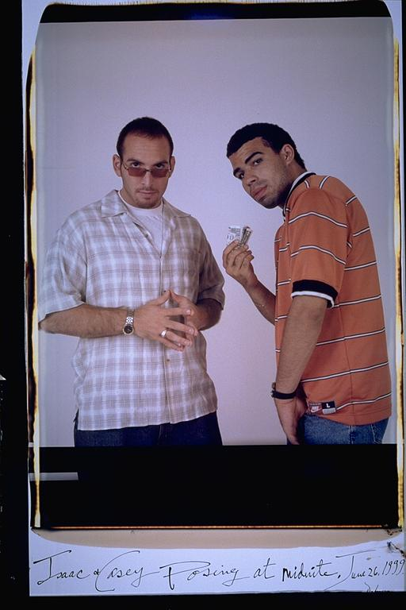

Pals: Boys Who Grew Up Together
elsadorfman.com/pals
Casey: This picture shows how close me and Isaac have become over the years. We weren't too close until he ended up at Columbia with me and we spent a lot of time at bars, joking or just watching TV. Isaac and I have many similar interests and views but what REALLY BONDS US IS OUR SENSE OF HUMOR. In this picture I decided to parody a lot of rappers and their blatant arrogance and materialism, by showing off all the money I had, two dollars -- hopefully someday it will prove to be ironic.
Aldo: These guys are good friends, but it took a long time. They've been living in the same city their whole lives. Went to the same high school, and the same college, and after all that they really became friends. Hanging out with these guys, you're sure to see something crazy. The only guys in the world who get enough laughs.

elsad@comcast.net